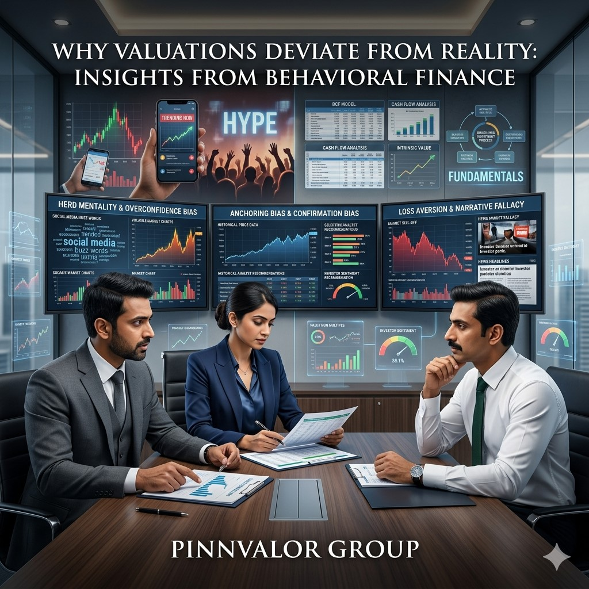

Why Valuations Deviate from Reality: Insights from Behavioral Finance
Valuation is often perceived as a precise financial science driven by cash flows, growth projections, market multiples, and risk assessments. Traditional valuation models assume that investors act rationally and that markets efficiently reflect all available information. However, real-world markets frequently tell a different story. Companies become overvalued during periods of market euphoria, while fundamentally strong businesses may trade at significant discounts during times of uncertainty.
Why do market prices frequently diverge from the actual value of a business?
Great valuations require more than financial expertise—they require an understanding of human behavior. Those who can separate sentiment from fundamentals are better positioned to uncover true value.
The gap between intrinsic value and market value often stems from human behavior. This is where Behavioral Finance comes into play. By combining psychology with finance, behavioral finance explains why investors make irrational decisions and how these decisions influence asset prices and business valuations.
Understanding behavioral biases is increasingly important for investors, business owners, valuation professionals, and corporate decision-makers seeking to distinguish perceived value from actual value.
What Is Behavioral Finance?
Behavioral finance is a field of study that examines how psychological factors, emotions, cognitive biases, and social influences affect financial decisions. Unlike traditional finance theories that assume investors are rational, behavioral finance recognizes that individuals are often influenced by fear, greed, overconfidence, and herd behavior.
These behavioral tendencies can significantly impact market prices, resulting in valuations that deviate from a company's fundamental worth.
The Difference Between Market Value and Intrinsic Value
Intrinsic value represents the true economic worth of a business based on its expected future cash flows, assets, profitability, and growth potential.
Market value, on the other hand, reflects what investors are willing to pay for the company at a given point in time.
While market value and intrinsic value may align over the long term, behavioral biases often create temporary or prolonged gaps between the two.
For example:
- A rapidly growing technology company may attract excessive investor optimism, pushing its valuation far above fundamentals.
- A profitable company operating in an unpopular industry may trade below intrinsic value due to negative market sentiment.
- Economic crises may trigger widespread panic selling, causing fundamentally strong businesses to become undervalued.

Key Behavioral Biases That Influence Valuation
1. Overconfidence Bias
Overconfidence occurs when investors overestimate their knowledge, forecasting abilities, or understanding of market trends.
This bias often leads investors to:
- Overestimate future growth rates
- Ignore downside risks
- Pay excessive premiums for high-growth companies
- Engage in excessive trading activity
During bull markets, overconfidence can significantly inflate valuation multiples, creating asset bubbles that eventually correct when expectations fail to materialize.
2. Herd Mentality
Humans naturally seek validation from the actions of others. In financial markets, this behavior manifests as herd mentality, where investors follow market trends without independently assessing value.
When large groups of investors buy a particular stock or sector, valuations may rise rapidly regardless of underlying fundamentals.
Examples include:
- Technology bubbles
- Cryptocurrency surges
- Real estate booms
- Meme stock phenomena
Herd behavior often creates substantial valuation distortions that are difficult to justify using conventional valuation methods.
3. Anchoring Bias
Anchoring occurs when investors rely heavily on an initial reference point when making decisions.
Examples include:
- Previous stock prices
- Historical valuation multiples
- Past transaction values
- Analyst target prices
Even when new information emerges, investors may remain anchored to outdated benchmarks, leading to inaccurate valuation assessments.
4. Confirmation Bias
Confirmation bias causes individuals to seek information that supports their existing beliefs while ignoring contradictory evidence.
In valuation, investors may:
- Focus only on positive news
- Dismiss warning signals
- Ignore declining fundamentals
- Overlook emerging risks
This selective interpretation can contribute to overvaluation or delayed recognition of deteriorating business performance.
5. Loss Aversion
Behavioral studies suggest that investors feel the pain of losses more intensely than the pleasure of gains.
As a result, investors often:
- Hold losing investments too long
- Avoid realizing losses
- Become excessively risk-averse during downturns
- Undervalue businesses facing temporary challenges
Loss aversion can create significant discounts in valuation during periods of market stress.
6. Availability Bias
Investors tend to place greater emphasis on information that is recent, memorable, or widely publicized.
For example:
- A company receiving extensive media attention may command a valuation premium.
- Recent market crashes may cause investors to overestimate future risks.
- High-profile success stories may inflate growth expectations.
This bias often causes valuations to fluctuate based on perception rather than objective analysis.
Behavioral Finance and Valuation Bubbles
History provides numerous examples where behavioral biases have driven valuations far from reality.
The Dot-Com Bubble
During the late 1990s, investor enthusiasm for internet-based businesses led to extraordinary valuations despite limited revenues and profitability.
Many companies were valued based on future possibilities rather than actual financial performance. When expectations proved unrealistic, valuations collapsed dramatically.
The Global Housing Bubble
Before the 2008 financial crisis, widespread optimism and herd behavior contributed to inflated real estate valuations. Investors believed housing prices would continue rising indefinitely, resulting in unsustainable market conditions.
Recent Technology and Growth Stock Surges
Periods of low interest rates and strong market sentiment have often fueled premium valuations for growth-oriented companies. In many cases, expectations outpaced actual business fundamentals, leading to eventual market corrections.
Impact on Business Valuation Professionals
Valuation experts must recognize that market prices do not always reflect intrinsic value. While traditional valuation methodologies remain essential, understanding behavioral influences helps provide a more balanced perspective.
Professionals should:
- Challenge market assumptions
- Evaluate whether market sentiment is influencing inputs
- Assess the sustainability of growth expectations
- Consider both optimistic and pessimistic scenarios
- Incorporate sensitivity analysis into valuation models
Combining quantitative analysis with behavioral insights can improve valuation accuracy and decision-making.
How Investors Can Reduce Behavioral Biases
While eliminating biases completely is impossible, investors can adopt practices to minimize their influence.
- Focus on long-term fundamentals rather than short-term market movements.
- Use disciplined valuation frameworks.
- Seek diverse viewpoints and contrary opinions.
- Regularly review assumptions and forecasts.
- Avoid emotional decision-making during periods of market volatility.
- Maintain a structured investment process.
- Conduct scenario and sensitivity analyses.
Awareness of behavioral biases is often the first step toward making more rational financial decisions.
The Growing Importance of Behavioral Finance in Modern Markets
In today's environment of social media influence, instant information sharing, algorithmic trading, and global connectivity, investor sentiment can spread faster than ever before. Market reactions are increasingly shaped by narratives, perceptions, and psychological triggers.
As a result, behavioral finance has become an essential complement to traditional valuation techniques. Investors and valuation professionals who understand both financial fundamentals and human psychology are better equipped to identify mispriced opportunities and avoid valuation traps.
Conclusion
Valuation is not solely a mathematical exercise; it is also a reflection of human behavior. While traditional valuation models provide a foundation for determining intrinsic value, behavioral biases often create significant deviations between market prices and economic reality.
Overconfidence, herd mentality, anchoring, confirmation bias, loss aversion, and availability bias all contribute to valuation distortions that can persist for extended periods. Recognizing these influences enables investors, business leaders, and valuation professionals to make more informed decisions and better distinguish between perceived value and true worth.
In an increasingly complex financial landscape, the ability to understand both numbers and human psychology may be one of the most valuable skills in achieving accurate and sustainable valuations.